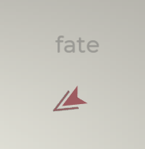

Armas principales
Las armas principales son las armas iniciales en Glyphica y tienen un papel muy importante en el juego. Cuando escribes una palabra que aparezca sobre el enemigo, el arma principal se apunta al enemigo y se activa. Cada arma principal tiene efectos y mecánicas únicas que requieren de distintas estrategias para ser más eficaces.
Mientras que hay armas más enfocadas en la velocidad de tecleo (PPM), hay otras que requieren de un planteamiento más táctico. Como cualquier otro arma en el juego, las armas principales se pueden mejorar y pueden evolucionar, mejorando tanto sus habilidades como su efectividad a medida que avanzas.
Lista de armas principales
RepetidoraRayo de calorAndanadaLanzababasRepetidora
Etiquetas: Cinético, Principal
Un arma devastadora que dispara balas en ráfagas cortas.
Evoluciones
Nombre |
Descripción |
| Colmillo de escarcha |
Efectos:
Daño de frío: +10
Probabilidad de congelar: 3%
Afecta al daño base y se ve afectado por los modificadores de daño de frío. |
| Colmillo de escarcha II |
Efectos:
Daño de frío: +20
Daño cinético: -10
Afecta al daño base. |
| Rebote |
Efectos:
Cadena de proyectiles: 3
Los proyectiles de la Repetidora rebotan a objetivos aleatorios cercanos y hacen 50% de daño a los objetivos posteriores al primero. |
| Rebote II |
Efectos:
Cadena de proyectiles: +2 |
| Escopeta |
Efectos:
Cantidad de proyectiles: +5
Esparcimiento de los proyectiles: +400%
Daño cinético: -10
La Repetidora ahora disparará un cúmulo de proyectiles más débiles y con mayor esparcimiento. Los modificadores de daño afectan al daño base. |
| Escopeta II |
Efectos:
Cantidad de proyectiles: +5
Esparcimiento de los proyectiles: +100% |
| Balas explosivas |
Efectos:
Daño explosivo: +5
Daño cinético: -10
Afecta al daño base. La Repetidora ahora usa munición explosiva que hace daño explosivo en una pequeña área. |
| Balas explosivas II |
Efectos:
Daño explosivo: +10
Daño cinético: -10
El rango de la explosión de las balas de la Repetidora aumenta ligeramente. |
Mejoras
Nombre |
Descripción |
| Aprendizaje amplificado |
Evolución: +10 Bajas |
| Análisis de batalla |
Evolución: +20 Bajas |
| Tutelaje experto |
Evolución: +30 Bajas |
| Balas encamisadas |
Daño: +10% |
| Mejora de penetración de armadura |
Daño: +20% |
| Mejora de penetrador |
Daño: +30% |
| Marcado avanzado |
Probabilidad de crítico: +1%
Daño crítico: +50% |
| Sistema de guía de precisión |
Probabilidad de crítico: +2%
Daño crítico: +100% |
| Aumento de ojo de águila |
Probabilidad de crítico: +3%
Daño crítico: +200% |
Rayo de calor
Etiquetas: Calorífico, Principal, D.P.
Dispara un rayo constante de luz concentrada increíblemente preciso que hace daño periódico.
Evoluciones
Nombre |
Descripción |
| Rayo de hielo |
Efectos:
Daño de calor: -25
Daño de frío: +25
Probabilidad de congelar: 8%
Afecta al daño base. El tipo de daño del Rayo de calor pasa a ser daño de frío y tiene más posibilidades de congelar. |
| Rayo de hielo II |
Efectos:
Daño de frío: +20
Afecta al daño base. |
| Reflejo |
El Rayo de calor ahora puede atravesar enemigos y se refleja 2x vez en el borde de la pantalla. |
| Reflejo II |
El Rayo de calor se refleja 4x veces en el borde de la pantalla. |
| Duplicado |
Se dispara otro rayo en la dirección opuesta. Todas las evoluciones y mejoras se aplican a los dos rayos. |
| Desintegrador |
Efectos:
Cadencia de disparo: +500%
El Rayo de calor ahora dispara un proyectil láser independiente que puede golpear a varios objetivos en lugar de un rayo constante, sigue contando como un arma de D.P. |
| Desintegrador II |
Efectos:
Longitud del proyectil: +100%
Daño: +40% |
Mejoras
Nombre |
Descripción |
| Fusión del núcleo |
Evolución: +10 Bajas |
| Llama primordial |
Evolución: +20 Bajas |
| Deflagración apocalíptica |
Evolución: +30 Bajas |
| Llamas feroces |
Daño: +10% |
| Calor intenso |
Daño: +20% |
| Explosión cataclísmica |
Daño: +30% |
| Convergencia |
Grosos del rayo: +20%
(Rango) |
| Refulgencia |
Grosos del rayo: +40%
(Rango) |
| Haz de rayos |
Grosos del rayo: +60%
(Rango) |
| Ignición rápida |
Cadencia de disparo: +10% |
| Velocidad abrasadora |
Cadencia de disparo: +20% |
| Sobrecarga infernal |
Cadencia de disparo: +30% |
Andanada
Etiquetas: Explosivo, Principal
Dispara una ráfaga de misiles explosivos al objetivo y a su alrededor. Se recarga con el tiempo.
Evoluciones
Nombre |
Descripción |
| Matriz de cohetes |
La Andanada ahora disparará 3 - 6 misiles por cada barra de munición en lugar de 2 - 5. |
| Matriz de cohetes II |
La Andanada ahora disparará 4 - 7 misiles por cada barra de munición en lugar de 3 - 6. |
| Munición sísmica |
Los misiles se entierran en el suelo en lugar de detonar y generan pulsos explosivos durante unos segundos. |
| Munición sísmica II |
Efectos:
Rango: 25%
Duración: 25% |
| Reabastecimiento |
Ahora aparecerán cajas de reabastecimiento. Al activarlas recargarás tu arma principal y recibirás una mejora de 30% de daño en tu siguiente disparo. |
| Reabastecimiento II |
Las cajas de reabastecimiento ahora también dan 30% de rango de explosión en tu siguiente disparo. |
Mejoras
Nombre |
Descripción |
| Salva suprema |
Evolución: +10 |
| Asalto atronador |
Evolución: +20 |
| Andanada apocalíptica |
Evolución: +30 |
| Carga de impacto |
Daño: +10% |
| Golpes devastadores |
Daño: +20% |
| Carga cataclísmica |
Daño: +30% |
| Alcance aumentado |
Rango: +10% |
| Carga de largo alcance |
Rango: +20% |
| Asalto amplio |
Rango: +30% |
| Recarga rápida |
Velocidad de recarga: +10% |
| Reabastecimiento presto |
Velocidad de recarga: +20% |
| Carga veloz |
Velocidad de recarga: +30% |
Lanzababas
Etiquetas: Químico, Principal, D.P.
Lanza unas pelotas de baba a tus oponentes que los debilita y les daña.
Evoluciones
Nombre |
Descripción |
| Pompa de limo |
Aparecerán mejoras de Pompas de limo en los Charcos de babas.
Cuando se activan, las Pompas de limo explotan y hacen daño en una pequeña área y además crean más Charcos de babas. |
| Pompa de limo II |
Aumenta la aparición de las Pompas de limo.
Las Pompas de limo tienen un 50% de probabilidades de explotar automáticamente cuando acaba el temporizador. |
| Infestación |
Efectos del Lanzababas:
Prob. de efectos de estado: +5%
Efectos globales:
Daño de los efectos de estado: +30% |
| Infestación II |
Los enemigos que mueran a causa de efectos de estado explotan y dejan Charcos de babas |
| Lava |
Efectos:
Daño químico: -100%
Daño calorífico: +40
Afecta al daño base. Cambia el tipo de daño del Lanzababas a Calorífico. |
| Lava II |
Efectos:
Daño de calor: +20
Afecta al daño base. |
| Propagación virulenta |
Efectos de los Charcos de babas:
Duración: -50%
Los Charcos de babas se extienden poco a poco con el tiempo. |
Mejoras
Nombre |
Descripción |
| Eficiencia tóxica |
Evolución: +10 |
| Maestría cáustica |
Evolución: +20 |
| Maestro de las plagas |
Evolución: +30 |
| Salpicadura ponzoñosa |
Daño: +10% |
| Estallido venenoso |
Daño: +20% |
| Nube de perdición |
Daño: +30% |
| Gases persistentes |
Rango: 10% |
| Oleada de neurotoxinas |
Rango: 20% |
| Corriente estratosférica |
Rango: 30% |
| Disipación tardía |
Duración: 10% |
| Vida media prolongada |
Duración: 20% |
| Invierno nuclear eterno |
Duración: 30% |
Armas por nivel
Las armas por nivel se consiguen durante la partida al subir de nivel. Una vez elijas una, este arma aparecerá en tu arsenal. Cada arma tiene un método de activación único aunque la mayoría se activa escribiendo y marcando objetivos con tu arma principal.
Puedes conseguir hasta un máximo de cuatro armas por nivel. Una vez añadas una a tu arsenal sus mejoras podrán aparecer cuando subas de nivel, así podrás mejorar sus habilidades mientras te abres paso entre las oleadas.
Lista de armas por nivel
EspectroCentinelaMina TeslaOsciladorMeteoritoCazadorRebanadoraCampo de minasTrampa de cuchillasEspectro
Etiquetas: Cinético, Dron
Completar palabras que contengan los glifos a, e, o Invoca una cantidad de drones melee veloces equivalente al número de combinaciones de las de arriba.
Evoluciones
Nombre |
Descripción |
| Supercarga |
Cada 20 Espectros que despliegues aparecerá un SÚPER Espectro.
Súper Espectros:
+100% de daño
+50% de duración
+50% de velocidad |
| Autodestrucción |
Efectos:
Daño explosivo: +50
Cuando el Espectro se desactiva, este se autodestruye provocando daño explosivo. Afecta al daño base y se ve afectado por modificadores de daño explosivo. |
| Autodestrucción II |
Efectos:
Daño explosivo: +50
Rango: +30%
Afecta al daño base. |
| Combustible volátil |
Efectos:
Velocidad: +50% |
| Combustible volátil II |
Efectos:
Velocidad: 50%
Duración: -25% |
Mejoras
Nombre |
Descripción |
| Conocimiento fantasmal |
Evolución: +10 Bajas |
| Maestría espectral |
Evolución: +20 Bajas |
| Fantasmagoría |
Evolución: +30 Bajas |
| Tácticas de enjambre |
Daño: +10% |
| Asalto coordinado |
Daño: +20% |
| Estrategia de mente colmena |
Daño: +30% |
| Baterías de ricordio |
Duración: +10% |
| Células de energía cargadas |
Duración: +20% |
| Sobrecarga del núcleo |
Duración: +30% |
| Autoensamblaje |
Completar una palabra con más de 7 glifos de longitud hace parecer un Espectro adicional. |
Centinela
Etiquetas: Calorífico, Torreta
Despliega una torreta automática que dispara a los enemigos que se pongan a rango.
Evoluciones
Nombre |
Descripción |
| Matriz de defensa |
Efectos:
Torretas: +1 |
| Munición monolítica |
Efectos:
Daño cinético: +10
Probabilidad de sangrado: 3%
Afecta al daño base y se ve afectado por los modificadores de daño cinético. |
| Munición monolítica II |
Efectos:
Daño cinético: +20
Daño de calor: -10
Afecta al daño base. |
| Protocolo de emergencia |
Cada vez que se destruye una mejora de escudo el Centinela entrará en el modo Protocolo de emergencia durante 10 segundos.
Durante el Protocolo de emergencia recibe:
Rango: +50%
Cadencia de disparo: +100% |
| Protocolo de emergencia |
Durante el Protocolo de emergencia recibe:
Daño: +50%
Velocidad de rotación: +50% |
Mejoras
Nombre |
Descripción |
| Sentidos agudizados |
Evolución: +10 Bajas |
| Protector vigilante |
Evolución: +20 Bajas |
| Vigilia eterna |
Evolución: +30 Bajas |
| Gatillo sensible |
Cadencia de disparo: +10% |
| Acelerador de fuego rápido |
Cadencia de disparo: +20% |
| Protocolo de Asalto Relámpago |
Cadencia de disparo: +30% |
| Munición penetrante |
Daño: +10% |
| Desgarra-armaduras táctico |
Daño: +20% |
| Munición exo-penetrante |
Daño: +30% |
| Ópticas aumentadas |
Rango: +10% |
| Mirillas mejoradas |
Rango: +20% |
| Sistemas de apuntado preciso |
Rango: +30% |
Mina Tesla
Etiquetas: Eléctrico, Torreta, D.P.
Completar palabras que empiecen con los glifos b, c, d, e Despliega una torreta eléctrica que hace daño periódico.
Evoluciones
Nombre |
Descripción |
| Bobinas abundantes |
También hará aparecer una Mina Tesla además de los glifos existentes. |
| Quemadura eléctrica |
Efectos:
Daño de calor: +4
Probabilidad de quemar: 3%
Afecta al daño base y se ve afectado por los modificadores de daño de calor. |
| Quemadura eléctrica II |
Efectos:
Daño de calor: +8
Daño eléctrico: -4
Afecta al daño base. |
| Área restringida |
Los enemigos en el rango de la Mina Tesla tienen un 20%% más de probabilidades de recibir estática de todas las fuentes de daño eléctrico. |
| Área restringida II |
El daño de estática aumenta en 5 y el rango en 30%. Esto se aplica a la estática inflingida por todos los medios y afecta al daño base. |
Mejoras
Nombre |
Descripción |
| Maestría conductiva |
Evolución: +10 Bajas |
| Destreza fulgurante |
Evolución: +20 Bajas |
| Amplificatorium |
Evolución: +30 Bajas |
| Bobinas reforzadas |
Duración: +10% |
| Conductores resistentes |
Duración: +20% |
| Inducción sobrecargada |
Duración: +30% |
| Sobrecarga |
Daño: +10% |
| Subidón voltaico |
Daño: +20% |
| Amplificación de tempestad |
Daño: +30% |
| Campo amplificado |
Rango: +10% |
| Alcance ampliado |
Rango: +20% |
| Infinito |
Rango: +30% |
| Carga estática |
Probabilidad de Estática: +1% |
| Conducción residual |
Probabilidad de Estática: +3% |
| Sobrecarga voltaica |
Probabilidad de Estática: +5% |
Oscilador
Etiquetas: Calorífico, Remota
Dispara un rayo de partículas en la dirección de tu objetivo más reciente.
Evoluciones
Nombre |
Descripción |
| Bicéfalo |
El Oscilador obtiene un rayo más que se dispara en la dirección opuesta. |
| Esfera de relámpagos |
Efecto:
Daño eléctrico: +3
Probabilidad de estática: 3%
Afecta al daño base y se ve afectado por los modificadores de daño eléctrico. |
| Esfera de relámpagos II |
Efecto:
Daño eléctrico: +6
Daño de calor: -3
Afecta al daño base. |
| Plasma estabilizado |
Los proyectiles del Oscilador ahora atraviesan a los enemigos. Los enemigos golpeados de esta manera reciben 50% de daño. |
| Plasma estabilizado II |
El daño de las quemaduras aumenta en 5. Esto se aplica a las quemaduras causadas por cualquier fuente y afecta al daño base. |
Mejoras
Nombre |
Descripción |
| Armónicos de precisión |
Evolución: +10 Bajas |
| Resonador adaptable |
Evolución: +20 Bajas |
| Forma de onda |
Evolución: +30 Bajas |
| Ignición de plasma |
Daño: +10% |
| Descarga cuántica |
Daño: +20% |
| Nova |
Daño: +30% |
| Bombardeo de obliteración |
Propagación: +10% |
| Alcance orbital |
Propagación: +20% |
| Expansión cuántica |
Propagación: +30% |
| Enfoque crítico |
Prob. de crítico: +1%
Mult. de crítico: +50% |
| Onda de precisión |
Prob. de crítico: +2%
Mult. de crítico: +100% |
| Carga cuántica |
Prob. de crítico: +3%
Mult. de crítico: +200% |
Meteorito
Etiquetas: Explosivo, Remota
Invoca marcadores en zonas aleatorias periódicamente que puedes activar para iniciar un bombardeo orbital.
Evoluciones
Nombre |
Descripción |
| Vigilancia |
Meteorito te muestra ahora dos posibles objetivos en lugar de uno. |
| Vigilancia II |
Meteorito te muestra ahora tres posibles objetivos en lugar de dos. |
| Granizo |
Efectos:
Daño explosivo: -65
Daño de frío: +25
Probabilidad de congelar: 5%
Afecta al daño base y se ve afectado por los modificadores de daño de frío. |
| Granizo II |
Efectos:
Daño de frío: +20
Probabilidad de congelar: +5% |
| Inmisericorde |
Efectos:
Rango: -50%
Tasa de disparo: -50%
Los Meteoritos caen de manera continua, avanzando en la dirección de tu último objetivo. |
| Inmisericorde II |
Efectos:
Velocidad: +50%
Probabilidad de crítico: +10% |
Mejoras
Nombre |
Descripción |
| Tripulación entusiasta |
Evolución: +10 Bajas |
| Información orbital |
Evolución: +20 Bajas |
| Buscavistas veterano |
Evolución: +30 Bajas |
| Bombardeo de precisión |
Daño: +10% |
| Mejora de impacto |
Daño: +20% |
| Apocalipsis |
Daño: +30% |
| Acelerador de relé |
Probabilidad de aparición: +10% |
| Secuenciador de lanzamiento |
Probabilidad de aparición: +20% |
| Lluvia de muerte |
Probabilidad de aparición: +30% |
| Módulo de larga distancia |
Rango: +10% |
| Matriz de amplificación |
Rango: +20% |
| Alcance cataclísmico |
Rango: +30% |
Cazador
Etiquetas: Eléctrico, Dron, D.P.
Completar palabras que contengan los glifos i, o, u Invoca una cantidad de drones que disparan rayos equivalente al número de combinaciones de las de arriba.
Evoluciones
Nombre |
Descripción |
| Cazador de élite |
Cada 12 Cazadores que despliegues aparecerá un Cazador de élite.
Cazador de élite:
+100% de daño
+50% de duración
+50% de velocidad
+50% de rango |
| Proyectiles electrificados |
Efectos:
Daño cinético: +5
Probabilidad de sangrado: 3%
Los Cazadores ahora disparan proyectiles en lugar de rayos. Afecta al daño base y se ve afectado por los modificadores de daño cinético. |
| Proyectiles electrificados II |
Efectos:
Daño cinético: +10
Daño eléctrico: -5
Afecta al daño base. |
| Cadena de relámpagos |
Los ataques de los Cazadores afectan a 1 enemigo cercano adicional. |
| Cadena de relámpagos II |
Los ataques de los Cazadores afectan a 2 enemigos cercanos adicionales. |
Mejoras
Nombre |
Descripción |
| Concentración absoluta |
Evolución: +10 Bajas |
| Precisión de descarga |
Evolución: +20 Bajas |
| Depredador |
Evolución: +30 Bajas |
| Carga eléctrica |
Daño: +10% |
| Focalizador de tormentas |
Daño: +20% |
| Sobrecarga cuántica |
Daño: +30% |
| Rayo concentrado |
Rango: +10% |
| Descarga dirigida |
Rango: +20% |
| Lluvia de relámpagos |
Rango: +30% |
| Eficiencia energética |
Duración: +10% |
| Destrucción optimizada |
Duración: +20% |
| Matriz perpetua |
Duración: +30% |
Rebanadora
Etiquetas: Cinético, Remota
Invoca una cuchilla giratoria enorme que se dispara desde el arma principal y que viaja hasta el borde de la pantalla, causa daño a todos los enemigos a su paso.
Evoluciones
Nombre |
Descripción |
| Doble empuñadura |
Efecto:
+1 Rebanadora |
| Cuchillas flamígeras |
Efecto:
Daño de calor: +7
Probabilidad de quemar: +3%
Afecta al daño base y se ve afectado por los modificadores de daño de calor. |
| Cuchillas flamígeras II |
Efecto:
Daño de calor: +14
Daño cinético: -7
Afecta al daño base. |
| Bumerán |
La Rebanadora ahora viaja de vuelta al Arma principal tras alcanzar el borde de la pantalla. |
| Bumerán II |
Efectos:
Velocidad: +75%
Cadencia de disparo: +50% |
Mejoras
Nombre |
Descripción |
| Maestro afilador |
Evolución: +10 Bajas |
| Destreza para la incisión |
Evolución: +20 Bajas |
| Guillotina |
Evolución: +30 Bajas |
| Bordes afilados |
Daño: +10% |
| Hoja templada |
Daño: +20% |
| Hoja afilada |
Daño: +30% |
| Mejora de rotores |
Tasa de giro: +10% |
| Turborotación |
Tasa de giro: +20% |
| Rotores Hiperaumentados |
Tasa de giro: +30% |
| Hojas alargadas |
Rango: +10% |
| Alcance aumentado |
Rango: +20% |
| Maestro de la distancia |
Rango: +30% |
| Afilado agudo |
Probabilidad de sangrado: +1% |
| Hemorrágico |
Probabilidad de sangrado: +3% |
| Bordes de sierra |
Probabilidad de sangrado: +5% |
Campo de minas
Etiquetas: Explosivo, Dron
Completar palabras que empiecen con los glifos f, g, h, i Invoca unas minas que se mueven lentamente y explotan al entrar en contacto con los enemigos.
Evoluciones
Nombre |
Descripción |
| Despliegaminas |
También desplegará Minas junto a los demás glifos existentes. |
| Infusionado |
Efectos:
Daño químico: +20
Probabilidad de emponzoñar: 10%
Afecta al daño base y se ve afectado por los modificadores de daño químico. |
| Infusionado II |
Efectos:
Probabilidad de emponzoñar: +10%
Daño explosivo: -50
Afecta al daño base. |
| Minas depredadoras |
Efectos:
Velocidad: +200%
Rango: -50%
Las Minas se dirigirán automáticamente a objetivos aleatorios. |
| Minas depredadoras II |
Efectos:
Minas desplegadas: +1
Velocidad: +100% |
Mejoras
Nombre |
Descripción |
| Detonador por IA |
Evolución: +10 Bajas |
| Balística precisa |
Evolución: +20 Bajas |
| Devastador |
Evolución: +30 Bajas |
| Aumento de carga explosiva |
Daño: +10% |
| Artillería pesada |
Daño: +20% |
| Ojiva ampliada |
Daño: +30% |
| Aumento de alcance |
Rango: +10% |
| Supresión del campo de batalla |
Rango: +20% |
| Radio ilimitado |
Rango: +30% |
| Fabricador veloz |
+1 mina desplegada |
Trampa de cuchillas
Etiquetas: Cinético, Torreta
Completar palabras que empiecen con los glifos j, k, l, m Despliega una trampa de cuchillas giratorias.
Evoluciones
Nombre |
Descripción |
| Repositorio de cuchillas |
También hará aparecer una Trampa de cuchillas junto a los demás glifos existentes. |
| Recubrimiento de veneno |
Efectos:
Daño químico: +5
Probabilidad de emponzoñar: 10%
Afecta al daño base y se ve afectado por los modificadores de daño químico. |
| Recubrimiento de veneno II |
Efectos:
Daño químico: 5+
Probabilidad de emponzoñar: +5%
Afecta al daño base. |
| Cuchillas con dientes de sierra |
Las Trampas de cuchillas añaden su probabilidad de crítico a su probabilidad de causar sangrado. |
| Cuchillas con dientes de sierra II |
Daño por sangrado aumentado en 5. Esto se aplica al sangrado aplicado por todas las fuentes y afecta al daño base. |
Mejoras
Nombre |
Descripción |
| Trampas mejoradas |
Evolución: +10 Bajas |
| Vórtice reactivo |
Evolución: +20 Bajas |
| Lacerador |
Evolución: +30 Bajas |
| Cuchillas reforzadas |
Daño: +10% |
| Cuchillas de titanio |
Daño: +20% |
| Cuchillas de diamante |
Daño: +30% |
| Engranajes engrasados |
Tasa de giro: +10% |
| Engranajes de precisión |
Tasa de giro: +20% |
| Caja de cambios cuántica |
Tasa de giro: +30% |
| Relojería mejorada |
Duración: +10% |
| Relojería impoluta |
Duración: +20% |
| Cargador de ricodio |
Duración: +30% |
Enemigos
Los enemigos en Glyphica aparecer de manera procedural acorde a las métricas del nivel de amenaza, que va aumentando a medida que progresa la partida. En el Modo Pruebas la amenaza de multiplica por el Nivel de Prueba actual lo que causa que cada nivel sea más dificil. En el Modo Infinito, la amenaza se ajusta a una escala adaptable que depende del nivel del jugador, haciendo que el valor más alto determine la dificultad de los enemigos que aparecen.
Los enemigos también están repartidos entre enemigos especiales y enemigos de élite, cada uno tiene su propio límite de tipo que limita su tasa de aparición dentro del marco del nivel de amenaza.
Lista de enemigos
DronDron escudadoAcechadorTiradorFragmentadoCustodioEnjambreTirador
El tirador es un enemigo que se atrincherará en el borde del mapa y te disparará sin parar una serie de proyectiles a tu arma principal hasta que lo destruyas.
Lista de variantes
| Imagen |
Descripción |
 |
Salud: 450
Daño: 25
|
|  |
Salud: 900
Daño: 25
|
 |
Salud: 1800
Daño: 25
|
Custodio
El custodio es un enemigo de élite que aparece en las fases tardías. Cuenta con un escudo que gira a su alrededor y bloquea el daño proveniente de la dirección que bloquea el escudo. Además, mientras un custodio siga con vida, le otorga protección a los enemigos cercanos y los vuelve invulnerables mientras el custodio no sea derrotado.
Lista de variantes
| Imagen |
Descripción |
 |
Salud: 450
|
Enjambre
El enjambre es un enemigo de élite que lanza pequeños grupos de enemigos hacia el arma principal. Continuará haciéndolo hasta que lo derrotes.
Lista de variantes
| Imagen |
Descripción |
 |
Salud: 3000
|
Objetos de botín
Los objetos de botín se consiguen en cofres del tesoro que aparecerán durante la partida. Cuando consigas uno aparecerá una selección aleatoria de objetos y podrás elegir uno para conseguir una mejora pasiva que permanecerá activa el resto de la partida.
Los objetos de botín están repartidos entre objetos comunes, poco comunes y raros lo que determinará su probabilidad de aparecer a la hora de elegir botín. Al derrotar a un jefe en una de las Pruebas conseguirás un cofre del tesoro que solo contendrá objetos raros.
Lista de botín raro
Nombre |
Descripción |
| Vidente |
Si no te quedan Reintentos cuando subas de nivel, evoluciones un arma o entres en la pantalla de botín conseguirás 1 Reintento. |
| Armamento improvisado |
Todas las armas de dron:
Prob. de invocar drones adicionales: 35% |
| Saqueador |
+1 Opción de botín |
| Multiobjetivo |
Todas las armas remotas tienen +1% prob. de crítico por cada arma en tu posesión. |
| Imán gigante |
Recoges las mejoras automáticamente cuando se acaba el tiempo. |
| Escarchado |
Efecto universal - no cuenta como arma.
Los enemigos reciben daño periódico cuando están Congelados. |
| Necrobomba |
Al destruir a un enemigo con daño explosivo crítico desatas una ráfaga de explosiones alrededor de la zona del enemigo derrotado. |
| Premio gordo |
Al destruir a un enemigo con daño crítico, tienes 30% de probabilidades de que aparezca una mejora de reintento, escudo o salud. |
| Réplica |
El daño crítico siempre causa efectos de estado. |
| Vampirismo |
Gana una cantidad de salud igual a 5% del daño cinético crítico. |
| Sabiduría |
Al conseguir una mejora de Escudo consigues 10 bajas de cara a la evolución de todas tus armas. |
| Comodín |
Al conseguir una mejora de Reintentos haces una cantidad aleatoria de daño entre 0 y 100 a todos los enemigos en pantalla. |
| Última baza |
Cuando pierdes un Escudo, ganas una mejora de Daño doble. |
| Daño triple |
Todas las mejoras de Daño doble pasan a ser mejoras de Daño triple. |
| Fractura |
Todo el daño que hagas a los enemigos congelados aumenta en 50%. Este modificador es multiplicativo. |
| Ascético |
Cuando salgas de la pantalla de Botín recibirás una mejora de 10% de daño por cada Reintento sin usar que tengas durante 20 segundos. |
| Armonización |
Todas las armas equipadas reciben un nivel de Evolución. |
| Inmortalidad |
Si tu Arma principal está a punto de ser destruida está aguantará a 1 punto de vida. Esta habilidad solo se puede activar una vez cada 2 minutos. |
| Iluminación |
Cuando destruyes a un enemigo con daño crítico, avanzas la evolución de todas tus armas en 1 punto. |
| Epílogo |
Al completar la palabra de un enemigo una vez ha sido destruido recibes una mejora de 10% de daño durante 10 segundos. Este efecto se acumula hasta 3 veces. |
| Asesino |
Todas las armas de dron: +50% de daño |
| Ejecutor |
Todas las armas de torreta: +50% de daño |
| Degeneración |
Todas las armas remotas: +50% de daño |
Lista de botín poco común
Nombre |
Descripción |
| Tsunami |
Todas las armas explosivas:
Rango: +25% |
| Onda de choque |
Todas las armas explosivas:
Daño: +25% |
| Aniquilación |
Todas las armas explosivas:
Mult. de crítico: +100% |
| Descenso |
Todas las armas explosivas:
Prob. de daño doble: +2% |
| Fuego indiscriminado |
Todas las armas cinéticas:
Daño: +25% |
| Erupción |
Todas las armas cinéticas:
Cadencia de disparo: +25% |
| Perforador |
Todas las armas cinéticas:
Prob. de crítico: +2% |
| Heraldo |
Todas las armas cinéticas:
Prob. de sangrado: +4% |
| Infierno |
Todas las armas de calor:
Daño: +25% |
| Plasmatizador |
Todas las armas de calor:
Rango: +25% |
| Fénix |
Todas las armas de calor:
Prob. de reintento: +5% |
| Piroclasto |
Todas las armas de calor:
Prob. de quemar: +4% |
| Criostasis |
Todas las armas de frío:
Daño: +25% |
| Glacial |
Todas las armas de frío:
Prob. de congelar: +4% |
| Repulsor |
Todas las armas de frío:
Prob. de escudo: +5% |
| Criogenia |
Todas las armas de frío:
Duración: +25% |
| Sobrecargado |
Todas las armas eléctricas:
Prob. de estática: +4% |
| Megatormenta |
Todas las armas eléctricas:
Daño: +25% |
| Amplificador |
Todas las armas eléctricas:
Cadencia de disparo: +25% |
| Singularidad |
Todas las armas eléctricas:
Duración: +25% |
| Infinidad |
Todas las armas de dron:
Duración: +25% |
| Hiperpropulsores |
Todas las armas de dron:
Velocidad: +25% |
| Omnisciencia |
Todas las armas de dron:
Daño: +25% |
| Pesadilla de escarcha |
Todas las armas de dron:
Prob. de mejora de congelar: +2% |
| Omnipotenciador |
Todas las armas remotas:
Rango: +25% |
| Autoenlace |
Todas las armas remotas:
Velocidad: +25% |
| Comandancia |
Todas las armas remotas:
Damage: +25% |
| Nucleo energizante |
Todas las armas de torreta:
Duración: +25% |
| Tormenta infernal |
Todas las armas de torreta:
Cadencia de disparo: +25% |
| Exactitud |
Todas las armas de torreta:
Daño: +25% |
| Arremetida |
Todos los efectos de estado:
Daño: +25% |
| Tormento |
Todos los efectos de estado:
Duración: +25% |
| Enigma |
Todas las armas de botín:
Prob. de crítico: +2% |
| Arsenal |
Todas las armas:
Daño: +12.5% |
| Salvaguardia |
Todas las armas:
Duración: +12.5% |
| Vista de lince |
Todas las armas:
Rango: +12.5% |
| A bocajarro |
Los enemigos a los que aciertes cerca del arma principal reciben +20% de daño. |
| Exacerbación |
Todas las armas:
Prob. de estados alterados: +2% |
| Criotécnicos |
Mejoras de congelación:
Probabilidad de aparición: +2%
Mejoras de daño doble:
-100% de prob. de aparición |
| Zafarrancho de combate |
Mejoras de daño doble:
Probabilidad de aparición: +4%
Mejoras de congelación:
-100% de prob. de aparición |
| Piñata |
Todas las armas:
Probabilidad de aparición de botín: +2%
Probabilidad de:
Palabras más largas: +20% |
| Cañón de cristal |
Todas las armas:
Daño: +30%
Arma principal:
Salud máxima: -50% |
| Regeneración |
Te curas 5% puntos de tu vida máxima cada vez que activas una mejora de Botín, Congelar Daño doble, Reintento o de Escudo |
| Erosión |
Las armas de D.P. pueden causar daños críticos. |
| Resquebrajar |
Todas las armas cinéticas reciben +5% de probabilidad de crítico contra enemigos congelados. |
| Resiliencia |
Activar las mejoras de Escudo aumenta tu duración global en un 10% durante 10 segundos. Se acumula hasta 3 veces. |
| Apostador |
Consigue 1 Reintento y aumenta la capacidad máxima de Reintentos que puedes tener a 6. |
| Protector |
Consigue 1 Escudo y aumenta la capacidad máxima de Escudos que puedes tener a 4. |
| Impecable |
Cada x17 Secuencias perfectas aumentan tu cadencia de disparo global en 5%. |
| Catarsis |
Al cometer un error haces 20 de daño explosivo a todos los enemigos por cada x17 Secuencia(s) perfecta(s). |
| Decadencia |
Todas las armas de D.P. : +35% de cadencia de disparo |
| Marchito |
Todos los efectos de estado: +35% de cadencia de disparo |
Lista de botín común
Nombre |
Descripción |
| Explosión |
Todas las armas explosivas:
Rango: +2% |
| Detonación |
Todas las armas explosivas:
Daño: +2% |
| Destrozo |
Todas las armas cinéticas:
Daño: +2% |
| Ráfaga |
Todas las armas cinéticas:
Cadencia de disparo: +2% |
| Carbonizado |
Todas las armas de calor:
Daño: +2% |
| Ascuas |
Todas las armas de calor:
Rango: +2% |
| Permafrost |
Todas las armas de frío:
Daño: +2% |
| Escalofrío |
Todas las armas de frío:
Duración: +2% |
| Descarga |
Todas las armas eléctricas:
Daño: +2% |
| Hipertensión |
Todas las armas eléctricas:
Cadencia de disparo: +2% |
| Enlace |
Todas las armas de dron:
Duración: +2% |
| Picadura |
Todas las armas de dron:
Daño: +2% |
| Alcance |
Todas las armas remotas:
Rango: +2% |
| Acometida |
Todas las armas remotas:
Daño: +2% |
| Refuerzo |
Todas las armas de torreta:
Duración: +2% |
| Baluarte |
Todas las armas de torreta:
Daño: +2% |
| Enfermedad |
Todos los efectos de estado:
Daño: +2% |
| Resonancia |
Todos los efectos de estado:
Duración: +2% |
| Dominio |
Todas las armas:
Daño: +1% |
| Aguante |
Todas las armas:
Duración: +1% |
| Proyección |
Todas las armas:
Rango: +1% |
| Zona de impacto |
Todas las armas explosivas:
Rango: +15% |
| Impacto |
Todas las armas explosivas:
Daño: +15% |
| Vaporizar |
Todas las armas explosivas:
Mult. de crítico: +75% |
| Alijo oculto |
Todas las armas explosivas:
Prob. de daño doble: +1% |
| Balas de punta hueca |
Todas las armas cinéticas:
Daño: +15% |
| Ráfaga |
Todas las armas cinéticas:
Cadencia de disparo: +15% |
| Penetración |
Todas las armas cinéticas:
Prob. de crítico: +1% |
| Segador |
Todas las armas cinéticas:
Prob. de sangrado: +2% |
| Abrasador |
Todas las armas de calor:
Daño: +15% |
| Radiador |
Todas las armas de calor:
Rango: +15% |
| Renacimiento |
Todas las armas de calor:
Prob. de reintento: +2% |
| Inflamable |
Todas las armas de calor:
Prob. de quemar: +2% |
| Hipotermia |
Todas las armas de frío:
Daño: +15% |
| Bajo cero |
Todas las armas de frío:
Probabilidad de congelar: +2% |
| Reflejo |
Todas las armas de frío:
Prob. de escudo: +2% |
| Refrigerante |
Todas las armas de frío:
Duración: +15% |
| Carga latente |
Todas las armas eléctricas:
Probabilidad de estática: +2% |
| Capacitor |
Todas las armas eléctricas:
Daño: +15% |
| Modulador |
Todas las armas eléctricas:
Cadencia de disparo: +15% |
| Concentrar |
Todas las armas eléctricas:
Duración: +15% |
| Extensor |
Todas las armas de dron:
Duración: +15% |
| Propulsores |
Todas las armas de dron:
Velocidad: +15% |
| Autómata |
Todas las armas de dron:
Daño: +15% |
| Corazones helados |
Todas las armas de dron:
Prob. de conseguir mejora de congelar: +1% |
| Amplificador de señal |
Todas las armas remotas:
Rango: +15% |
| Sin latencia |
Todas las armas:
Velocidad: +15% |
| Mandos |
Todas las armas remotas:
Daño: +15% |
| Prolongador |
Todas las armas de torreta:
Duración: +15% |
| Cañón automático |
Todas las armas de torreta:
Cadencia de disparo: +15% |
| Calibrado |
Todas las armas de torreta:
Daño: +15% |
| Atrición |
Todos los efectos de estado:
Daño: +15% |
| Inmisericorde |
Todos los efectos de estado:
Duración: +15% |
| Secretos |
Todas las armas de botín:
Prob. de crítico: +1% |
| Armamentos |
Todas las armas:
Daño: +5% |
| Kit de supervivencia |
Todas las armas:
Daño: +5% |
| Telescopio |
Todas las armas:
Rango: +5% |
| Epicentro |
Las armas de calor hacen +20% de daño cuando el objetivo está cerca del arma principal. |
| Líquido refrigerante |
Mejoras de congelación:
Duración: +20%
Probabilidad de aparición: +1% |
| Vulnerabilidad |
Mejoras de daño doble:
Duración: +20%
Probabilidad de aparición: +1% |
| Precisión |
Todas las armas:
Prob. de crítico: +1%
Mult. de crítico: +50%
Probabilidad de:
Palabras más largas: +10% |
| Botiquín |
Restaura 100 puntos de salud |
| Escudo |
Añade 1 Escudo.
Escudos actuales: 0 / 3 |
| Reintento |
Añade 1 Reintento.
Reintentos actuales: 3 / 5 |
| Hostigador |
Cada Hostigador aumenta el daño de cada instancia de D.P. en +4%. Esta mejora se duplica cuando está cerca del This bonus is doubled when close to Main Turret. |
Aumentos
Los aumentos son mejoras permanentes que se pueden desbloquear usando Monedas (§), un tipo de divisa que puedes conseguir en tus partidas. Al comienzo de cada partida, los jugadores tienen un número limitado de huecos para equiparse aumentos que hayan sido desbloqueados y este número varía dependiendo del nivel de Presagio que haya elegido.
Cada aumento tiene unas condiciones específicas que determinan sus beneficios. Para sacar el máximo provecho a tus aumentos necesitarás plantearte las sinergias que puedan tener para que se ajusten a tu estrategia.
Códice: Arma Principal
Nombre |
Coste |
Descripción |
| Acorazado |
50 §,
200 § |
Arma Principal:
Salud: +50% |
| Impaciente |
50 § |
Al comienzo de cada Prueba o Partida Infinita, ganas un nivel. |
| Jugador |
50 § |
Cada Reintento que uses le otorga a tu Arma Principal +20% de daño durante 20 segundos. |
| Inmaculado |
100 § |
Las Secuencias Perfectas pasan a darte un +1.5% de Probabilidad de Crítico. |
| Ofuscado |
200 §,
500 § |
Si estás por debajo del 50% de tu vida máxima, obtienes un +50% de Cadencia de Disparo general adicional. |
| Devoción |
200 § |
Obtienes un +25% de daño para tu Arma Principal por cada hueco de arma vacío que tengas. |
Códice: Drones
Nombre |
Coste |
Descripción |
| Armada |
200 § |
Tienes un 20% de probabilidades de desplegar un dron adicional cada vez que despliegues uno. |
| Diversidad |
50 § |
Por cada arma que no sea de drones que tengas equipada, aumenta la duración de los Drones en un 20%. |
| Asalto Relámpago |
50 § |
Las mejores de velocidad de los drones también mejoran su daño. |
| Venganza |
300 § |
Cada vez que pierdas un Escudo, todos los drones se autodestruyen haciendo daño explosivo. |
| Chivo expiatorio |
100 § |
Los errores destruyen un dron al azar en lugar de contar como un error. |
| Saqueo |
200 § |
Los drones pueden soltar mejoras al agotar su duración. |
Códice: Torreta
Nombre |
Coste |
Descripción |
| Fortaleza |
100 §,
400 § |
Cada Evolución de Torreta le otorga +50 de vida máxima a tu Arma Principal. |
| Interconexión |
50 § |
Por cada otra torreta que tengas tus torretas reciben +10% de cadencia de disparo hasta un máximo del 50%. |
| Investigación de Campo |
50 § |
Al activar una mejora recibes un +30% de rango para todas las torretas desplegadas. Este efecto no se acumula. |
| Relé Cargado |
500 § |
Un proyectil rebota entre las torretas desplegadas haciendo daño eléctrico. |
| Vigilante |
100 § |
Si no has atacado durante los 3 últimos segundos recibes un 30% de daño adicional para las torretas hasta tu próximo ataque. |
| Punto Débil |
200 § |
Los enemigos dentro del rango de tus torretas reciben un 30% más de daño de otras fuentes. |
Códice: D.P.
Nombre |
Coste |
Descripción |
| Corrosión |
500 § |
El daño de las armas con D.P. ahora puede ser crítico. |
| Sanguijuela |
200 § |
El Daño Periódico que hagas cerca de tu arma principal le sana 1 punto de vida. |
| Tenacidad |
100 §,
300 § |
Aumenta la duración del efecto de todas las armas de D.P. en un 35%. |
| Hostigadores |
50 § |
Añade Hostigadores a la lista de Botín disponible. Cada uno te otorga un 4% de D.P. adicional. El efecto se duplica si estás cerca del arma principal. |
| Convicción |
100 § |
Las armas de D.P. tienen un +40% de cadencia de disparo adicional mientras tengas el máximo de Reintentos. |
| Contaminante |
300 §,
500 § |
Las armas de D.P. tienen un +3% de probabilidades de provocar efectos de estado. |
Códice: Remoto
Nombre |
Coste |
Descripción |
| Combate de proximidad |
100 § |
Todo el daño que hagan tus armas remotas se considera que está cerca del arma principal. |
| Abrojos |
200 § |
Cuando tus armas remotas den un golpe crítico esparce 12 abrojos que hacen daño a los enemigos que pasen por la zona. |
| Munición cáustica |
500 § |
Probabilidades de que aparezca la mejora de Munición cáustica que añade 10 puntos de daño químico a las armas remotas durante 20 segundos. |
| Piratería |
50 § |
Por cada arma de Botín que tengas equipada aumenta todo el daño de las armas remotas en un 15% |
| Salvación |
100 § |
Las armas remotas tienen un +40% de rango adicional mientras tengas los escudos al máximo. |
| Tirador |
200 § |
Las mejoras de rango de armas remotas también se aplica a su daño. |
Inicio
Wiki Oficial de Glyphica
Bienvenidos, mecanógrafos
¡Bienvenidos a la Wiki oficial de Glyphica: Typing Survival! Poned a prueba vuestra habilidad para teclear en este juego de supervivencia de hordas donde la velocidad y la precisión son la clave para salir con vida. Ármate con las mejores herramientas para transformar tu habilidad con el teclado en ataques devastadores para acabar con tus enemigos. Descubre mucho más comprando el juego en Steam: Glyphica: Typing Survival.
Esta wiki te servirá de guía para saber todo lo que necesitas del contenido disponible y todas las mecánicas presentes en el Acceso Anticipado de Glyphica. Nuestro objetivo es mantener toda la información del juego actualizada paso a paso mientras alcanzamos la versión definitiva, la 1.0. Esta wiki está dividida en secciones listadas en las tablas de contenido y se irán actualizando a medida que el juego evolucione.
Tabla de contenidos
Armas principalesArmas por nivelEnemigosObjetos de botínAumentos